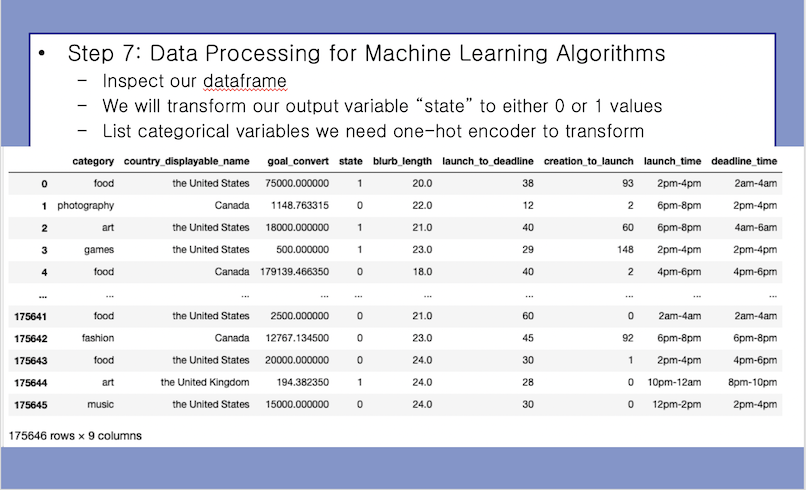
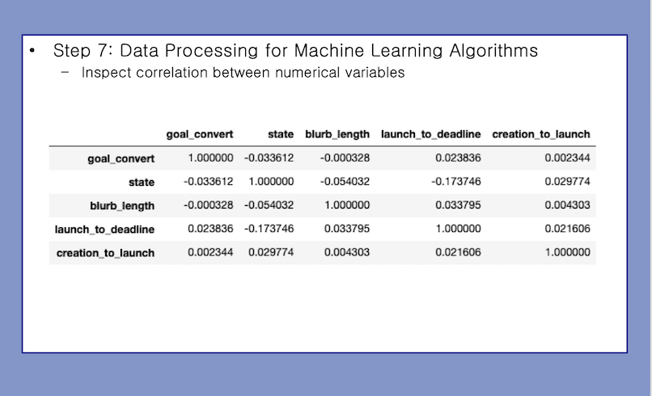
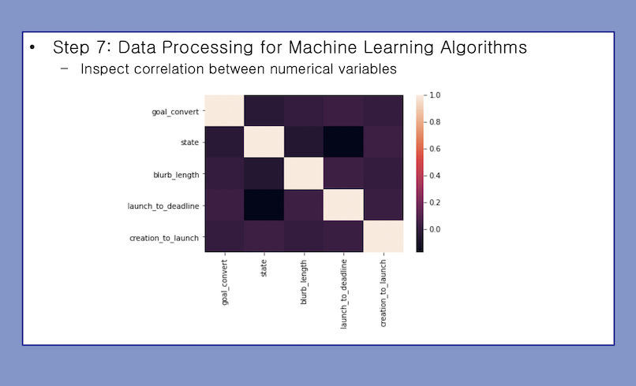
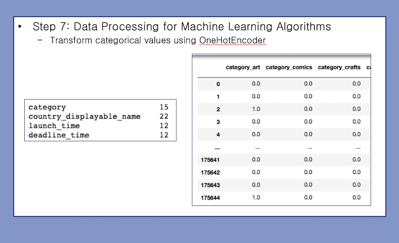
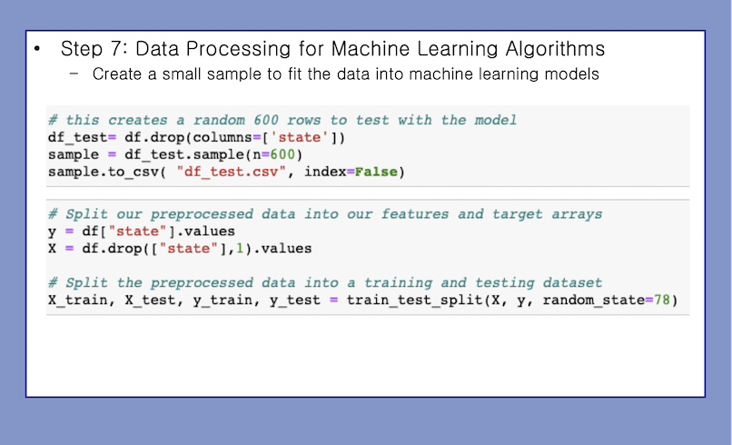
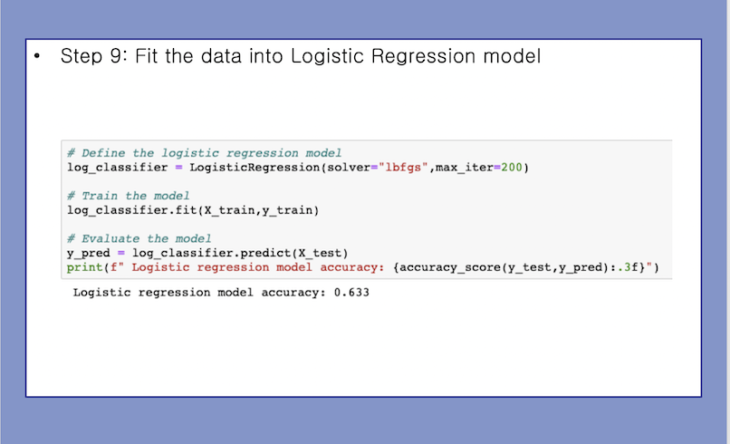
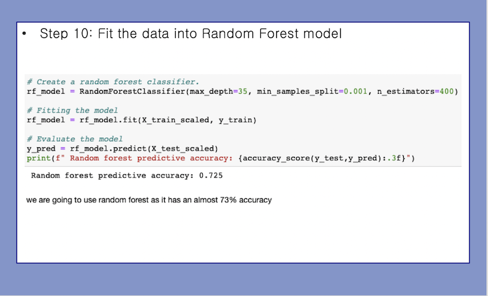
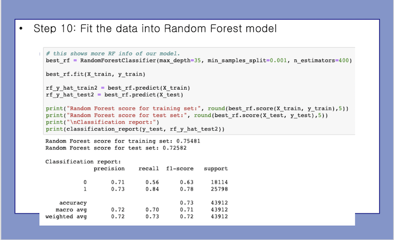
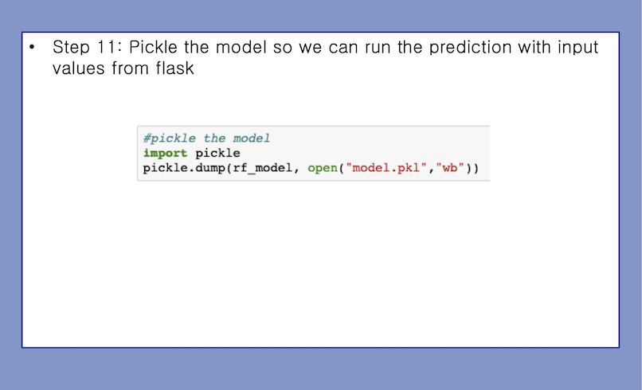

Machine Learning Page
Data pre-onehot encoding
We looked to see what the correlation looked like between all the variables
Below is a matrix that visually shows the correlation
Data is transformed using one hot encoder
Created a sample to use for testing and then split the data for the models
We scaled the data and used Pickle to save the scaler to use in the app. We ended up having 65 input variables for the model.
We then ran the data through a neural network

The model seemed to be overfit for the data. 76% training accuracy vs 70% on the actual.

We also tried logistical regression with even worse results
Random forest was our best consistent outcome after tweaking
We looked at the feature importances and used this to remove columns that did not explain much.


Once the model was trained, we used pickle to preserve it for the model.
